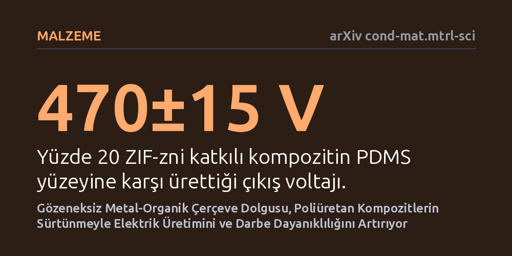

MALZEME · arXiv cond-mat.mtrl-sci · 2026-09-08
Araştırmacılar, sürtünmeyle elektrik üreten sistemlerde gözeneksiz ZIF-zni adlı metal-organik çerçevenin poliüretan kompozitlerdeki enerji dönüştürme performansını inceledi. Yüzde 20 dolgu oranına sahip malzemenin 470 volt çıkış ürettiği ve 500 newtonu aşan darbelere dayanarak kararlı çalıştığı gösterildi.
Bu bulgu, sürtünmeyle elektrik üretiminde yüksek gözeneklilik zorunluluğu varsayımını yıkarak hem yüksek elektriksel verim hem de ağır mekanik yüklere dayanıklılık sağlayan yeni bir malzeme tasarım yolunu açar.

Yürüme, titreşim veya basma gibi günlük hareketlerden elektrik üreten sürtünme elektrikli nanojeneratörler, pilsiz sensörler ve giyilebilir teknolojiler için umut verici bir enerji kaynağı olarak görülüyor. Bu sistemlerde performansı artırmak için sıklıkla metal-organik çerçeve adı verilen moleküler kafes malzemeleri kullanılıyor. Ancak alandaki genel kabul, sürtünmeyle yük transferini artırmanın ana yolunun malzemenin geniş bir iç yüzey alanına ve yüksek gözenekliliğe sahip olması gerektiği yönündeydi.
Bu varsayım beraberinde ciddi bir mekanik kırılganlık getiriyor. Gözenekli yapılar sürtünme yüzeyini genişletse de yoğun mekanik baskı, ayak basması veya ağır darbe altında kolayca ezilip yapısal bütünlüğünü kaybedebiliyor. Araştırmacılar bu temel açmazı çözmek amacıyla, gözenekli yapay kafesler yerine tamamen yoğun ve gözeneksiz kabul edilen bir çerçevenin de etkili bir sürtünme dolgusu olup olamayacağını sınamaya karar verdi.
Araştırma ekibi, gözeneksiz kabul edilen ZIF-zni kodlu yoğun bir metal-organik çerçeveyi dolgu maddesi olarak seçti. Bu parçacıklar, sürtünmede pozitif yüklenme eğilimi sergileyen poliüretan polimer matrisi içerisine ağırlıkça yüzde 20 oranında homojen bir şekilde yerleştirildi ve kompozit filmler üretildi.
Hazırlanan kompozit film, sürtünmede negatif yüklenen yaygın bir silikon polimeri olan PDMS yüzeyiyle karşılıklı temas ettirildi. Cihaz, yaklaşık 100 newtonluk temas kuvveti altında 94.000 döngüyü aşan kapsamlı bir mekanik yorulma testine tabi tutuldu. Malzemenin darbe dayanıklılığını ölçmek için uygulanan kuvvet 500 newtonun üzerine çıkarıldı ve elde edilen deneysel sonuçlar kuantum mekaniksel kuramsal modellerle desteklendi.
Elde edilen ölçümler, yüzde 20 oranında ZIF-zni içeren poliüretan kompozitin 470 volt çıkış voltajına ve metrekare başına 1,31 vatlık tepe güç yoğunluğuna ulaştığını gösterdi. Malzeme, yaklaşık 100 newtonluk kuvvet altında 94.000 döngü boyunca elektriksel performansında düşüş yaşamadan çalışmayı sürdürdü.
Çalışmanın en dikkat çekici bulgusu, malzemenin 500 newtonu aşan sert darbeler altında dahi bozulmadan işlevini koruması oldu. Araştırmacılar bu dayanıklılığı kanıtlamak için enerji üreten bir zemin karosu prototipi üretti. Analizler, yüksek performansın gözeneklerden değil; arayüzey polarizasyonunun güçlenmesinden, dielektrik perdelemenin azalmasından ve yüzeydeki yapışma enerjisinin düşerek sürtünme temasını iyileştirmesinden kaynaklandığını ortaya koydu.
Elde edilen bulgular, malzeme biliminde sürtünme elektrikli jeneratörlerin tasarlanma prensiplerini doğrudan etkiliyor. Yüksek enerji çıktısı elde etmek için malzemeyi sünger gibi gözenekli yapmanın zorunlu olmadığı; arayüzey elektronik yapısı ve polarizasyonu doğru yönetildiğinde yoğun yapıların da üstün verim sunabileceği anlaşılmış oldu.
Bu durum, yoğun yaya trafiğine maruz kalan akıllı zemin kaplamalarından ağır sanayi titreşimlerini izleyen sensörlere kadar yüksek mekanik baskı altındaki sistemlerin pilsiz çalışabilmesi açısından büyük bir avantaj sağlıyor. Yine de bu önbaskı çalışmasının laboratuvar dışındaki nem, sıcaklık değişimleri ve uzun süreli aşınma koşullarında bağımsız testlerle doğrulanması gerekiyor.